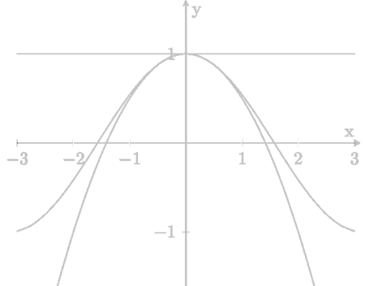
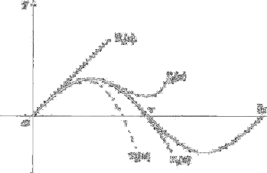

Formula di Taylor-MacLaurin con resto secondo Peano
Vogliamo ora generalizzare il procedimento di "approssimazione per linearizzazione" a quello di "approssimazione polinomiale". In altre parole, ci chiediamo: data una funzione, derivabile tutte le volte che sarà necessario, esiste un polinomio che, nell'intorno di un punto fissato, approssima la funzione meglio della sua retta tangente? L'esempio della funzione coseno si può rileggere in tal senso: la funzione cos x è approssimata dalla parabola y = 1 −x2/2 meglio che dalla retta tangente y = 1, per x ⟶ 0: infatti, lo scarto tra la funzione e questo polinomio di secondo grado è o(x2), cioè tende a zero più rapidamente di x2 (e non solo più rapidamente di x). Per semplicità, cominciamo a ragionare nell'intorno del punto x0 = 0. Procediamo in 2 passi:
Individuiamo un polinomio "candidato" ad approssimare bene la funzione, cercando un polinomio che abbia tutte le derivata fino all'ordine n uguali a quelle di f(x), nel punto x = 0. Affinché questo sia sempre possibile, il grado del polinomio dev'essere almeno n.

Fig. 1. La funzione cos x è approssimata dal polinomio y = 1 −x2/2 meglio che dalla retta tangente y = 1, vicino ad x = 0.
(Infatti, la derivata n-esima di un polinomio di grado minore di n è nulla, quindi non potrebbe essere uguale a f(n)(0), in generale). Facendo i calcoli, si trova che:
Teorema 5.19.1 (Polinomio di MacLaurin) Data una funzione f derivabile n volte in x = 0, esiste uno e un sol polinomio di grado ≤n, chiamiamolo Tn, con la proprietà che:
e questo polinomio, detto polinomio di MacLauring di f(x) di grado n, è
Notiamo che il polinomio Tn assegnato dal teorema precedente, solitamente è proprio di grado n, ma può avere gado minore se f(n)(0) = 0. È interessante osservare la coerenza dimensionale della formula che assegna il polinomio di MacLaurin: supponiamo che f abbia le dimensioni di una lunghezza [L] e x abbia le dimensioni di un tempo [T]. Allora [f'] = [L][T]−1, [f''] = [L] ⋅ [T]−2, e in generale [f(k)] = [L] ⋅ [T]−k. Questo significa che ogni addendo f(k)(0)xk/k! del polinomio Tn(x) ha la struttura
(costante adimensionale) ⋅ (fattore di dim. [L] ⋅ [T]−k.) ⋅ (fattore di dim. [T]k)
Perciò il polinomio di Maclaurin ha le dimensioni di una lunghezza, esattamente come la funzione f che si vuole approssimare.
Proviamo ora che il polinomio trovaro approssima bene f(x), in un intorno di x = 0. Precisamente, vale il:
Teorema 5.19.2 (Formula di MacLaurin all'ordine n, con resto secondo Peano) Sia f:(a,b) ⟶ ℝ derivabile n volte in 0 ∈ (a,b). Allora
f(x) = Tn(x) + o(xn) per x ⟶ 0
La formula precedente si dice "formula di MacLauring di ordine n, con resto secondo Peano".
La formula ha la struttura
funzione da approssimare = polinomio approssimante + errore di approssimazione
dove l'errore di approssimazione è il termine o(xn), detto resto secondo Peano. Per x ⟶ 0, il resto secondo Peano è tanto più piccolo quanto maggiore è n. Lo spirito della formula è dunque il seguente: conoscendo un numero abbastanza alto di derivata di f nel punto x = 0, si può approssimare sempre meglio f, in un intorno di x = 0.
Dim. Proviamo per semplicità il teorema nel caso n = 2, ossia:
f(x) = f(0) + xf'(0) + x2f''(0)/2 + o(x2) per x ⟶ 0
Occorre provare che
f(x) − [f(0) + xf'(0) + x2f''(2)/2] = o(x2) per x ⟶ 0
ossia (per definizione di "o piccolo") che:
Questo limite dà una funzione di indeterminazione [0/0], che calcoliamo con De L'Hospital:
dà ancora una forma [0/0]. Osserviamo ora che l'ultimo limite trovato è zero, per il seguente motivo. Per ipotesi, f è derivabile due volte, quindi f' è derivabile; se applichiamo il teorema di linearizzazione alal funzione f'(x) otteniamo
f'(x) = f'(0) + xf''(0) + o(x)
da cui segue che
il caso generale (n qualsiasi) si può dimostrare per induzione su n. Abbiamo già provato che la tesi vale per n = 2. Supponiamo ora di sapere che per qualsiasi funzione derivabile n − 1 volte in x = 0 vale la formula di MacLauring all'ordine n, e proponiamoci di dimostrare che
f(x) = Tn(x) + o(xn) per x ⟶ 0, ossia che
Applicando il T. di De L'Hospital, ci si trova a calcolare si ha
Osserviamo ora che la derivata del polinomio Tn(x) di f non è altro che il polinomio Tn −1(x) della funzione f':
T'n,f(x) = Tn − 1, f'(x)
come si verifica direttamente dalla definizione di Tn. D'altro canto, per l'ipotesi induttiva, appliata alla funzione f', sappiamo che
f'(x) = Tn − 1, f'(x) + o(xn −1), ossia
quindi il limite (5.19.4) è zero e, per il T. di De L'Hospital, anche il limite (5.19.3) è zero come volevamo dimostrare. □
Formula di Taylor all'ordine n
Tutto questo discorso si può generalizzare ad un punto x0 ≠ 0: data una funzione derivabile n volte in x0, si può costruire il suo polinomio di Taylor
e si può dimostrare che vale un analogo risultato di approssimazione locale:
Teorema (5.19.5) (Formula di Taylor all'ordine n con resto secondo Peano) Sia f: (a,b) ⟶ ℝ derivabile n volte in x0 ∈ (a,b). Allora
f(x) = Tn,x0(x) + o((x − x0)n) per x ⟶ x0
Esempio 5.19.6. Approssimazione all'ordine n Sia f(x) = ex. Essendo f(n)(x) = ex, f(n)(0) = 1 per ogni n, si ha:
ex = Tn,0(x) + o(xn) = 1 + x + x2/2! + x3/2! + ... + xn/n! + o(xn), per x ⟶ 0 ■
Esempio 5.19.7 Sia f(x) = sin x. Si ha:
f'(x) = cos xf''(x) = − sinx, f'''(x) = −cos x
e poi
f(iv)(x) = sin x = f(x) f(v)(x) = cos x = f'(x) ecc.
Ne segue che per n = 2k, pari, le derivata di ordine n sono nulle per x = 0, mentre quelle di ordine n = 2k + 1, dispari, sono alternativamente +1 e −1. In sintesi:
f(2k)(0) = 0, f(2k + 1)(0) = (−1)k, (k ≥ 0)
I polinomi di MacLaurin della funzione seno contengono perciò solo termini di grado dispari:
sin x = T1(x) + o(x) = x + o(x)
sin x = T3(x3) + o(x3) = x − x3/6 + o(x3)
sin x = T5(x3) + o(x5) = x − x3/6 + x5/120 + o(x5)
...
sin x = T2n+1(x) + o(x2n +1) = x − x3/3! + x5/5! + ...+ (−1)n (x2n+1)/(2n +1)! + o(x2n +1)
La fig. 2 illustra il miglioramento dell'approssimazine di sin x mediante i suoi polinomi di MacLauring, all'aumentare del grado del polinomio.

Nel quadro che segue abbiamo raggruppato gli sviluppi di MacLauring di alcune funzioni elementari, col resto di Peano.
ex = 1 + x + x2/2! + ... + x2/n! + o(xn)
sin x = x - x3/3! + x5/5! + ... + (−1)n x2n+1/(2n +1)! + o(x2n+1)
cos x = 1 − x2/2! + x4/4! + ... + (-1)n x2n/(2n)! + o(x2n)
cosh x = 1 + x2/2! + x4/4! + ... + x2n/(2n)! + o(x2n)
sinh x = x + x3/2! + x5/5! + ... + x2n+1/(2n+1)! + o(x2n+1)
log(1 + x) = x − x2/2 + x3/3 + ... + (-1)n-1xn/n + o(xn)
(1 + x)α = 1 + αx + x2α(α - 1)/2 + ... + α(α - 1)..(α - n +1)xn/n! + o(xn)
1/(1 − x) = 1 + x + x2 + ... + xn + o(xn)
A zero-order Taylor expansion, also known as a constant approximation, essentially represents the function's value at a specific point. For a function f(x), the zero-order Taylor expansion at x = a is simply f(a). Se arrestiamo lo sviluppo di f(x) al primo ordine, otteniamo sen x = x + o(x), ovvero (sen x)/x = 1 + o(1). Otteniamo così, come caso particolare dello sviluppo di MacLaurin (arrestato al 1° ordine), il limite notevole
limx ⟶ 0 sen x/x = 1
Analogamenteo, dallo sviluppo di f(x) = log (1 + x) e di f(x) = ex, si ottengono altri limiti, tradizionalmente presentanti come limiti "notevoli".